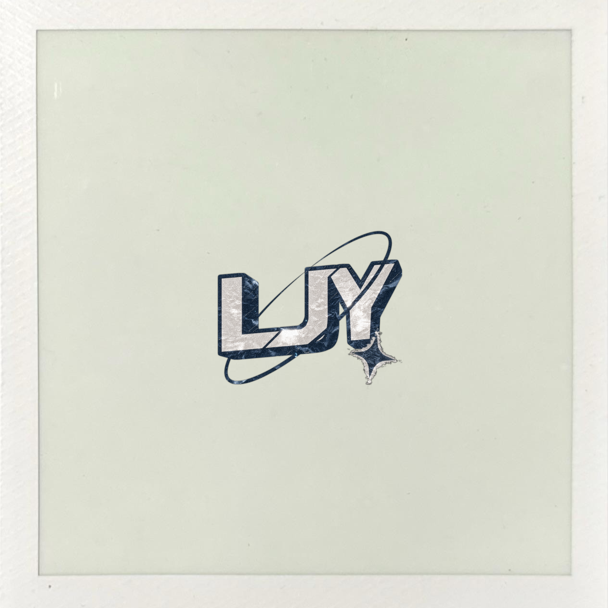

Discover
Confirm the scope, references and any device requirements.
BEHIND THE MOTION

I’m a motion designer and Roblox builder based in Singapore.
I create modern, clean motion graphics, title sequences and YouTube visuals. In Roblox Studio, I focus on highly detailed sci-fi environments, custom models and building details, including Doctor Who TARDIS Interiors and my own personal projects.
Outside of motion design and Roblox development, I also enjoy photography as a hobby.
MY LOCAL TIME · SINGAPORE
Singapore · UTC+8Local time
Confirm the scope, references and any device requirements.
Explore concepts, visuals and movement.
Polish the details and prepare the final delivery.